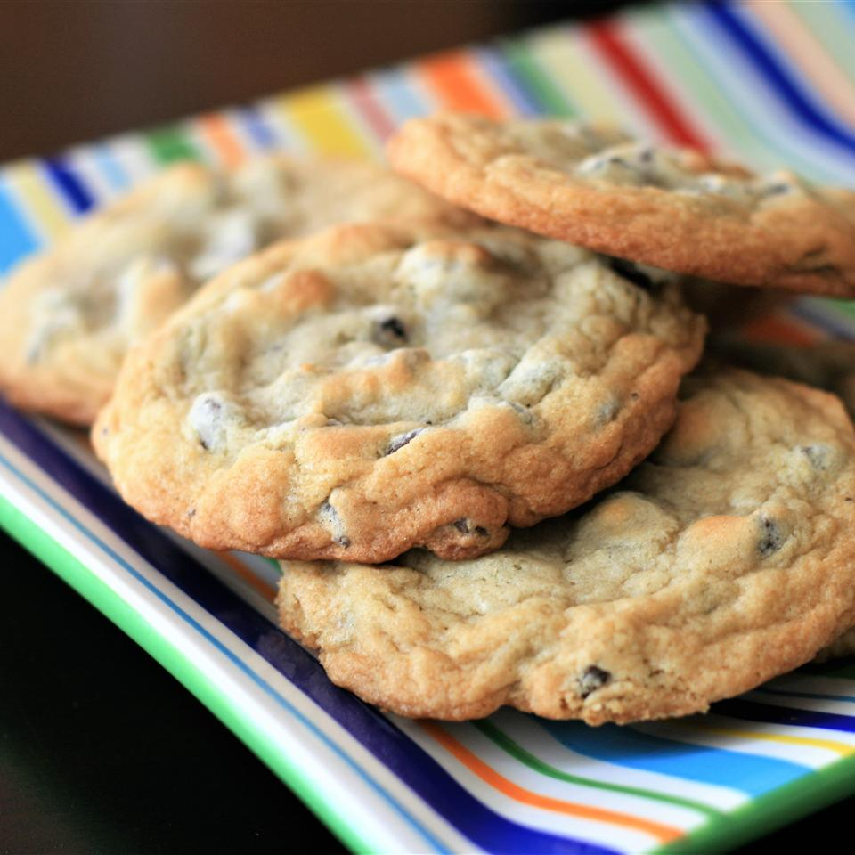

Chocolate Chip Cookies

How to Make the Best Cookies
This is a simple recipe with just a few steps to follow. Once you have gathered all of your ingredients, you will be on your way to making chocolate chip cookies like a pro! Even better, this recipe has even been regarded as the best recipe for taste, delicious, chocolate chip cookies.
Feel free to substitute as necessary - for example, eggs can typically be substituted with applesauce. Also, the walnuts can be removed or substituted with a different nut. The sky is the limit! Most importantly, use your gut when baking because humidity, altitude, water temperature, and more can effect your recipes.
Ingredients
- 1 cup butter, softened
- 1 cup white sugar
- 1 cup packed brown sugar
- 2 eggs
- 2 teaspoons vanilla extract
- 1 teaspoon baking soda
- 2 teaspoons hot water
- ½ teaspoon salt
- 3 cups all-purpose flour
- 2 cups semisweet chocolate chips
- 1 cup chopped walnuts
Steps
- Preheat oven to 350 degrees F (175 degrees C)
- Cream together the butter, white sugar, and brown sugar until smooth. Beat in the eggs one at a time, then stir in the vanilla. Dissolve baking soda in hot water. Add to batter along with salt. Stir in flour, chocolate chips, and nuts. Drop by large spoonfuls onto ungreased pans.
- Bake for about 10 minutes in the preheated oven, or until edges are nicely browned.